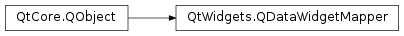

QDataWidgetMapper¶
Synopsis¶
Functions¶
- def
addMapping(widget, section) - def
addMapping(widget, section, propertyName) - def
clearMapping() - def
currentIndex() - def
itemDelegate() - def
mappedPropertyName(widget) - def
mappedSection(widget) - def
mappedWidgetAt(section) - def
model() - def
orientation() - def
removeMapping(widget) - def
rootIndex() - def
setItemDelegate(delegate) - def
setModel(model) - def
setOrientation(aOrientation) - def
setRootIndex(index) - def
setSubmitPolicy(policy) - def
submitPolicy()
Virtual functions¶
- def
setCurrentIndex(index)
Slots¶
- def
revert() - def
setCurrentModelIndex(index) - def
submit() - def
toFirst() - def
toLast() - def
toNext() - def
toPrevious()
Signals¶
- def
currentIndexChanged(index)
Detailed Description¶
The
PySide2.QtWidgets.QDataWidgetMapperclass provides mapping between a section of a data model to widgets.
PySide2.QtWidgets.QDataWidgetMappercan be used to create data-aware widgets by mapping them to sections of an item model. A section is a column of a model if the orientation is horizontal (the default), otherwise a row.Every time the current index changes, each widget is updated with data from the model via the property specified when its mapping was made. If the user edits the contents of a widget, the changes are read using the same property and written back to the model. By default, each widget’s
user propertyis used to transfer data between the model and the widget. Since Qt 4.3, an additionalPySide2.QtWidgets.QDataWidgetMapper.addMapping()function enables a named property to be used instead of the default user property.It is possible to set an item delegate to support custom widgets. By default, a
PySide2.QtWidgets.QItemDelegateis used to synchronize the model with the widgets.Let us assume that we have an item model named
modelwith the following contents:
1 Qt Norway Oslo 2 Qt Australia Brisbane 3 Qt USA Palo Alto 4 Qt China Beijing 5 Qt Germany Berlin The following code will map the columns of the model to widgets called
mySpinBox,myLineEditandmyCountryChooser:mapper = QDataWidgetMapper mapper.setModel(model) mapper.addMapping(mySpinBox, 0) mapper.addMapping(myLineEdit, 1) mapper.addMapping(myCountryChooser, 2) mapper.toFirst()After the call to
PySide2.QtWidgets.QDataWidgetMapper.toFirst(),mySpinBoxdisplays the value1,myLineEditdisplaysQt NorwayandmyCountryChooserdisplaysOslo. The navigational functionsPySide2.QtWidgets.QDataWidgetMapper.toFirst(),PySide2.QtWidgets.QDataWidgetMapper.toNext(),PySide2.QtWidgets.QDataWidgetMapper.toPrevious(),PySide2.QtWidgets.QDataWidgetMapper.toLast()andPySide2.QtWidgets.QDataWidgetMapper.setCurrentIndex()can be used to navigate in the model and update the widgets with contents from the model.The
PySide2.QtWidgets.QDataWidgetMapper.setRootIndex()function enables a particular item in a model to be specified as the root index - children of this item will be mapped to the relevant widgets in the user interface.
PySide2.QtWidgets.QDataWidgetMappersupports two submit policies,AutoSubmitandManualSubmit.AutoSubmitwill update the model as soon as the current widget loses focus,ManualSubmitwill not update the model unlessPySide2.QtWidgets.QDataWidgetMapper.submit()is called.ManualSubmitis useful when displaying a dialog that lets the user cancel all modifications. Also, other views that display the model won’t update until the user finishes all their modifications and submits.Note that
PySide2.QtWidgets.QDataWidgetMapperkeeps track of external modifications. If the contents of the model are updated in another module of the application, the widgets are updated as well.
-
class
PySide2.QtWidgets.QDataWidgetMapper([parent=nullptr])¶ Parameters: parent – PySide2.QtCore.QObjectConstructs a new
PySide2.QtWidgets.QDataWidgetMapperwith parent objectparent. By default, the orientation is horizontal and the submit policy isAutoSubmit.
-
PySide2.QtWidgets.QDataWidgetMapper.SubmitPolicy¶ This enum describes the possible submit policies a
PySide2.QtWidgets.QDataWidgetMappersupports.Constant Description QDataWidgetMapper.AutoSubmit Whenever a widget loses focus, the widget’s current value is set to the item model. QDataWidgetMapper.ManualSubmit The model is not updated until PySide2.QtWidgets.QDataWidgetMapper.submit()is called.
-
PySide2.QtWidgets.QDataWidgetMapper.addMapping(widget, section)¶ Parameters: - widget –
PySide2.QtWidgets.QWidget - section –
PySide2.QtCore.int
Adds a mapping between a
widgetand asectionfrom the model. Thesectionis a column in the model if the orientation is horizontal (the default), otherwise a row.For the following example, we assume a model
myModelthat has two columns: the first one contains the names of people in a group, and the second column contains their ages. The first column is mapped to thePySide2.QtWidgets.QLineEditnameLineEdit, and the second is mapped to thePySide2.QtWidgets.QSpinBoxageSpinBox:mapper = QDataWidgetMapper() mapper.setModel(myModel) mapper.addMapping(nameLineEdit, 0) mapper.addMapping(ageSpinBox, 1)
Notes:
- If the
widgetis already mapped to a section, the old mapping will be replaced by the new one. - Only one-to-one mappings between sections and widgets are allowed. It is not possible to map a single section to multiple widgets, or to map a single widget to multiple sections.
- widget –
-
PySide2.QtWidgets.QDataWidgetMapper.addMapping(widget, section, propertyName) Parameters: - widget –
PySide2.QtWidgets.QWidget - section –
PySide2.QtCore.int - propertyName –
PySide2.QtCore.QByteArray
Essentially the same as
PySide2.QtWidgets.QDataWidgetMapper.addMapping(), but adds the possibility to specify the property to use specifyingpropertyName.- widget –
-
PySide2.QtWidgets.QDataWidgetMapper.clearMapping()¶ Clears all mappings.
-
PySide2.QtWidgets.QDataWidgetMapper.currentIndex()¶ Return type: PySide2.QtCore.int
-
PySide2.QtWidgets.QDataWidgetMapper.currentIndexChanged(index)¶ Parameters: index – PySide2.QtCore.int
-
PySide2.QtWidgets.QDataWidgetMapper.itemDelegate()¶ Return type: PySide2.QtWidgets.QAbstractItemDelegateReturns the current item delegate.
-
PySide2.QtWidgets.QDataWidgetMapper.mappedPropertyName(widget)¶ Parameters: widget – PySide2.QtWidgets.QWidgetReturn type: PySide2.QtCore.QByteArrayReturns the name of the property that is used when mapping data to the given
widget.
-
PySide2.QtWidgets.QDataWidgetMapper.mappedSection(widget)¶ Parameters: widget – PySide2.QtWidgets.QWidgetReturn type: PySide2.QtCore.intReturns the section the
widgetis mapped to or -1 if the widget is not mapped.
-
PySide2.QtWidgets.QDataWidgetMapper.mappedWidgetAt(section)¶ Parameters: section – PySide2.QtCore.intReturn type: PySide2.QtWidgets.QWidgetReturns the widget that is mapped at
section, or 0 if no widget is mapped at that section.
-
PySide2.QtWidgets.QDataWidgetMapper.model()¶ Return type: PySide2.QtCore.QAbstractItemModelReturns the current model.
-
PySide2.QtWidgets.QDataWidgetMapper.orientation()¶ Return type: PySide2.QtCore.Qt.Orientation
-
PySide2.QtWidgets.QDataWidgetMapper.removeMapping(widget)¶ Parameters: widget – PySide2.QtWidgets.QWidgetRemoves the mapping for the given
widget.
-
PySide2.QtWidgets.QDataWidgetMapper.revert()¶ Repopulates all widgets with the current data of the model. All unsubmitted changes will be lost.
-
PySide2.QtWidgets.QDataWidgetMapper.rootIndex()¶ Return type: PySide2.QtCore.QModelIndexReturns the current root index.
-
PySide2.QtWidgets.QDataWidgetMapper.setCurrentIndex(index)¶ Parameters: index – PySide2.QtCore.int
-
PySide2.QtWidgets.QDataWidgetMapper.setCurrentModelIndex(index)¶ Parameters: index – PySide2.QtCore.QModelIndexSets the current index to the row of the
indexif the orientation is horizontal (the default), otherwise to the column of theindex.Calls
PySide2.QtWidgets.QDataWidgetMapper.setCurrentIndex()internally. This convenience slot can be connected to the signalPySide2.QtCore.QItemSelectionModel.currentRowChanged()orPySide2.QtCore.QItemSelectionModel.currentColumnChanged()of another view’sselection model.The following example illustrates how to update all widgets with new data whenever the selection of a
PySide2.QtWidgets.QTableViewnamedmyTableViewchanges:mapper = QDataWidgetMapper() connect(myTableView.selectionModel(), SIGNAL("currentRowChanged(QModelIndex,QModelIndex)"), mapper, SLOT(setCurrentModelIndex(QModelIndex)))
-
PySide2.QtWidgets.QDataWidgetMapper.setItemDelegate(delegate)¶ Parameters: delegate – PySide2.QtWidgets.QAbstractItemDelegateSets the item delegate to
delegate. The delegate will be used to write data from the model into the widget and from the widget to the model, usingQAbstractItemDelegate.setEditorData()andQAbstractItemDelegate.setModelData().The delegate also decides when to apply data and when to change the editor, using
QAbstractItemDelegate.commitData()andQAbstractItemDelegate.closeEditor().Warning
You should not share the same instance of a delegate between widget mappers or views. Doing so can cause incorrect or unintuitive editing behavior since each view connected to a given delegate may receive the
PySide2.QtWidgets.QAbstractItemDelegate.closeEditor()signal, and attempt to access, modify or close an editor that has already been closed.
-
PySide2.QtWidgets.QDataWidgetMapper.setModel(model)¶ Parameters: model – PySide2.QtCore.QAbstractItemModelSets the current model to
model. If another model was set, all mappings to that old model are cleared.
-
PySide2.QtWidgets.QDataWidgetMapper.setOrientation(aOrientation)¶ Parameters: aOrientation – PySide2.QtCore.Qt.Orientation
-
PySide2.QtWidgets.QDataWidgetMapper.setRootIndex(index)¶ Parameters: index – PySide2.QtCore.QModelIndexSets the root item to
index. This can be used to display a branch of a tree. Pass an invalid model index to display the top-most branch.
-
PySide2.QtWidgets.QDataWidgetMapper.setSubmitPolicy(policy)¶ Parameters: policy – PySide2.QtWidgets.QDataWidgetMapper.SubmitPolicy
-
PySide2.QtWidgets.QDataWidgetMapper.submit()¶ Return type: PySide2.QtCore.boolSubmits all changes from the mapped widgets to the model.
For every mapped section, the item delegate reads the current value from the widget and sets it in the model. Finally, the model’s
PySide2.QtCore.QAbstractItemModel.submit()method is invoked.Returns
trueif all the values were submitted, otherwise false.Note: For database models,
QSqlQueryModel.lastError()can be used to retrieve the last error.
-
PySide2.QtWidgets.QDataWidgetMapper.submitPolicy()¶ Return type: PySide2.QtWidgets.QDataWidgetMapper.SubmitPolicy
-
PySide2.QtWidgets.QDataWidgetMapper.toFirst()¶ Populates the widgets with data from the first row of the model if the orientation is horizontal (the default), otherwise with data from the first column.
This is equivalent to calling
setCurrentIndex(0).
-
PySide2.QtWidgets.QDataWidgetMapper.toLast()¶ Populates the widgets with data from the last row of the model if the orientation is horizontal (the default), otherwise with data from the last column.
Calls
PySide2.QtWidgets.QDataWidgetMapper.setCurrentIndex()internally.
-
PySide2.QtWidgets.QDataWidgetMapper.toNext()¶ Populates the widgets with data from the next row of the model if the orientation is horizontal (the default), otherwise with data from the next column.
Calls
PySide2.QtWidgets.QDataWidgetMapper.setCurrentIndex()internally. Does nothing if there is no next row in the model.
-
PySide2.QtWidgets.QDataWidgetMapper.toPrevious()¶ Populates the widgets with data from the previous row of the model if the orientation is horizontal (the default), otherwise with data from the previous column.
Calls
PySide2.QtWidgets.QDataWidgetMapper.setCurrentIndex()internally. Does nothing if there is no previous row in the model.
© 2018 The Qt Company Ltd. Documentation contributions included herein are the copyrights of their respective owners. The documentation provided herein is licensed under the terms of the GNU Free Documentation License version 1.3 as published by the Free Software Foundation. Qt and respective logos are trademarks of The Qt Company Ltd. in Finland and/or other countries worldwide. All other trademarks are property of their respective owners.